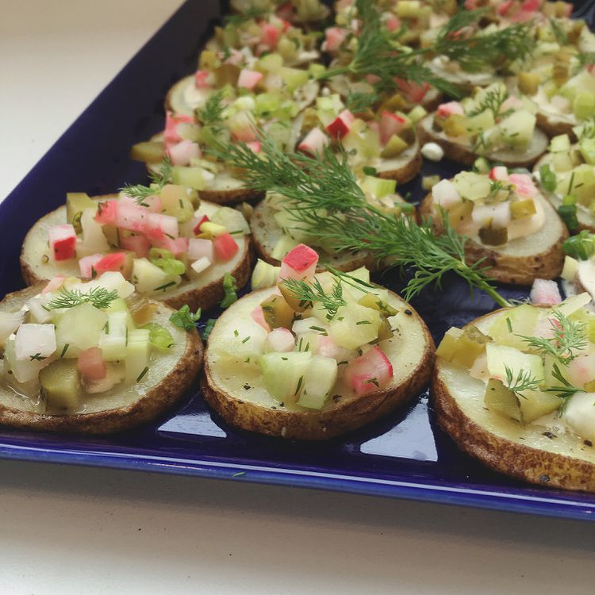

Back to Index
Potato Salad Bites

Description
Potato rounds are piled with a creamy dressing and plenty of crunch in these potato salad bites that are easy to assemble once all the chopping is done!
Ingredients
- 6 russet potatoes, scrubbed and thinly sliced
- 3 tablespoons olive oil, or as needed
- salt and ground black pepper to taste
Dressing:
- ½ cup mayonnaise
- ½ cup sour cream
- 2 tablespoons Dijon mustard, or more to taste
- 2 tablespoons apple cider vinegar
- 1 teaspoon balsamic vinegar
- 1 pinch paprika
- salt and ground black pepper to taste
Topping:
- 1 cup finely chopped celery
- ¾ cup finely chopped radishes
- ½ (14 ounce) jar cornichons, finely chopped
- 3 sprigs dill, divided
- 2 green onions, finely chopped
Steps
- Preheat oven to 400 degrees F (200 degrees C). Line 2 baking sheets with silicone baking mats.
- Divide potato slices between the baking sheets. Drizzle olive oil over slices and season with salt and pepper.
- Roast in the preheated oven until slightly softened, about 10 minutes. Rotate and switch baking sheets on the oven racks. Continue roasting until tender, about 10 minutes more. Let cool completely.
- Whisk mayonnaise, sour cream, Dijon mustard, apple cider vinegar, balsamic vinegar, paprika, salt, and pepper together in a bowl to make dressing.
- Mix celery, radishes, and cornichons together in a bowl. Chop leaves from 1 sprig of dill and mix into the bowl.
- Spoon 1/2 teaspoon of the dressing over cooled potato slices. Top with 1 teaspoon of the celery mixture. Sprinkle green onions on top. Garnish each slice with a small frond of dill from the remaining 2 sprigs.